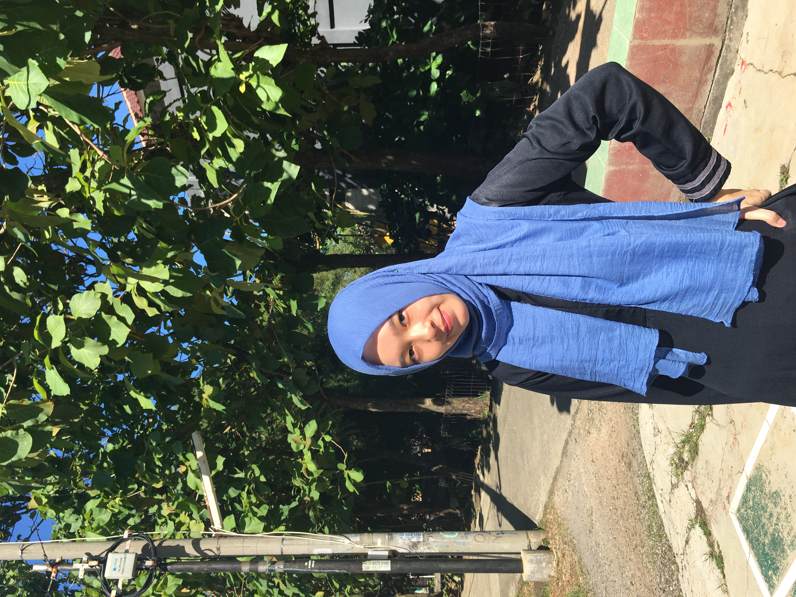

| BIODATA | |||||||||||||||||||||||||||||||||||||||||||||||||
|  | |||||||||||||||||||||||||||||||||||||||||||||||||
| Nama | Najla Kamila | ||||||||||||||||||||||||||||||||||||||||||||||||
| Kelas | XI.9 | ||||||||||||||||||||||||||||||||||||||||||||||||
| NIS | 19.65.09304 | ||||||||||||||||||||||||||||||||||||||||||||||||
| Sekolah | SMK-SMAK Bogor | ||||||||||||||||||||||||||||||||||||||||||||||||
| Hobi | Mendengarkan musik, memasak, streaming movie | ||||||||||||||||||||||||||||||||||||||||||||||||
| Tempat, Tanggal Lahir | Jakarta, 28 Juli 2004 | ||||||||||||||||||||||||||||||||||||||||||||||||
| Zodiak | Leo <3 | ||||||||||||||||||||||||||||||||||||||||||||||||
| No. Telepon | 081212262072 | ||||||||||||||||||||||||||||||||||||||||||||||||
Selama pandemi ini rasanya setiap hari kaya monoton. Yang dilakuin semuanya sama dari bangun tidur sampai tidur lagi. Jadi rasanya jenuh, bosen, suntuk, apalagi kita dihimbau buat ga keluar rumah. Waktu awal-awal pandemi masih banyak melakukan kegiatan untuk menghabiskan waktu di rumah sih, hehe. Momen itu dijadiin kesempatan buat melakukan sesuatu yang sebelumnya gabisa dilakuin karena ga sempet dan sibuk sekolah. Justru rasanya seneng banget karena bisa libur sekolah dan istirahat di rumah :DDD. Tapi sekarang... duhh.
Sampai saat ini saya belum bisa sepenuhnya terbiasa dan nerima keadaan yang memang seharusnya udah kaya gini. Rasanya masih pingin berharap kalau semuanya kembali ke keadaan semula, mungkin pandemi akan reda tapi situasi ga akan persis sama lagi seperti dulu :'(. Rasanya belum siap ngerasain kegiatan yang serba digital, masih pingin tetep keep in tuch sama orang-orang.
Tapi tetap kita gaboleh nyerah dan menyalahkan keadaan, tapi kita juga tetap nerima secara bersamaan. Keep strong and always keep healthy ya guys! Insyaallah kita bisa lewatin ini dan semua pasti ada jalan keluarnya :')